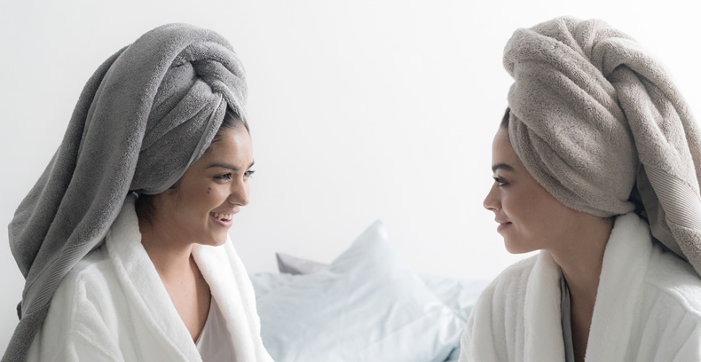
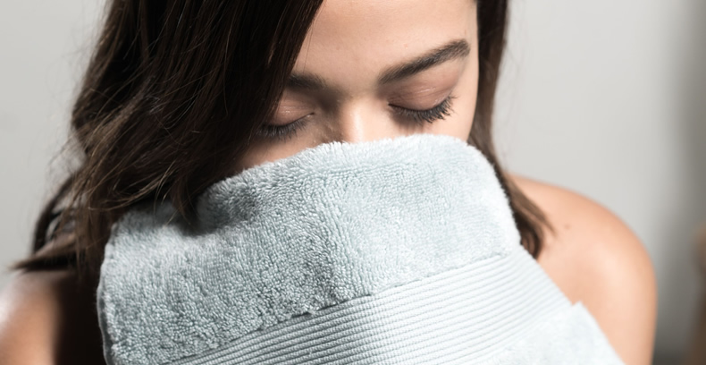
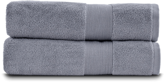
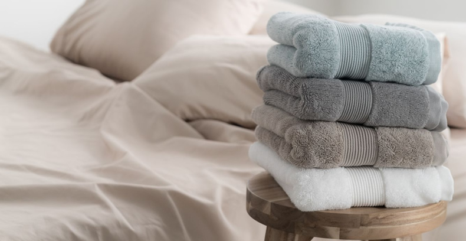

You Can Save Time and Money With Self-Cleaning Towels

By Jessica Michelle | October 19th 2020
You decide it’s time to “throw in the towel” literally, and find some new ones.

We see you parents out there with smelly teenagers, doing multiple loads of laundry a week…
Bachelors avoiding household chores every day like the plague, dealing with a mildew smell that fills their whole apartment…
Those of you who have a significant other that doesn’t quite live up to your personal hygiene standards, doing your best to keep your disgust quiet...
You don’t want to just ignore the stink, but you’re also getting frustrated trying to keep up with it.
Sometimes, even after you wash your towels, they still smell…
And you’re over it!

Rewash, rewash, rewash.
You’ve read that it can help to add bleach, vinegar, bakingsoda, a new fabric softener, and an extra rinse…
So you try it all, and even after this additional effort,time, and cost, you pull the towels out of the dryer, rub your face in them,and pull away wrinkling your nose.
Your towels now have stains on them and feel scratchy and rough…
What a waste!
You decide it’s time to “throw in the towel” literally, and find some new ones.
But there’s so many options, and you don’t want to end up with the same problems again in just a few months, or weeks, or even days.
Check For Available Discounts

Powerful Antibacterial Properties(1)(2)
Temperature Regulating(3)
Helps Increase Glowing Skin
Prevents The Growth Of
Odor-Generating Bacteria(4)
There’s Got To Be A Better Way
First, let’s get to the bottom of your smelly towel problem.
You see, most fabric is hygroscopic…
This is a fancy word that means it can absorb water from the air. So even though you may be doing all you can to keep your bath linens clean and dry:
● hanging your towels right after use
● keeping them off of the floor
● washing and drying them more frequently
● even for clean, folded towels in your closet
They absorb the humidity in the air which provides a moist environment, ideal for the growth of bacteria and mildew. The organisms’ waste is the source of the musty smell.
The next time you walk into your bathroom, imagine seeing your towels, sword in “hand”, fighting off these odor causing bacteria without you lifting a hand to help.
You’d be pretty shocked, right? And once you got over your surprise, you’d be thrilled!
Less bacteria means less laundry (3x less laundry, to be specific), less odor, and less mold.
By using one of human kind's first weapons against bacteria(5), people just like you are finding that they have to wash their bathroom linens less than before…
While also noticing less odor and longer lasting towels.
People like Dara, from New York, who said,
“These towels are very plush and large. And they don’t get as dirty as quickly as other towels.”
What Makes Her Towels Different Than Mine?
Well, let’s meet the hero of our story…
Silver.
Pure silver ions inhibit the growth of 99.998% of bacteria.(6)
They are positively charged fighting machines that magnetically attract and then combat negatively charged bacteria.
This means,essentially, mixing 95% premium plus cotton and 5% all-natural silver creates spa-like towels that almost clean themselves.
And that is exactly what Miracle Brand, through two unique manufacturing processes, has done.

They May Be Clean, But How Do They Feel?
No matter how good your towels smell, we understand that getting out of the shower and wrapping yourself in a thin, pilly, or scratchy cloth is disappointing…
So we’ve worked very hard to make sure that is not the case.
We want you to feel like you're staying at a luxury hotel with towels that you want to walk around in all day and you don’t have to do the laundry.
Let's see what Tracy, from Texas, has to say,
“These towels are comfortable and durable. They absorb well as stated, and still do a good job of preventing bacteria/odors.”
Our Miracle Brand Towels are made of maximum absorbency cotton and are guaranteed to dry you off in just about half the time!
But you don’t have to take our word for it…
Today.com(7) recently included our towels in a list of must have products, saying,
“They're made with Turkish cotton and natural silver, so they prevent odors and dry up to twice as fast as traditional towels.”
I’m Not Sure I Can Afford Such Luxury!
While some other towel brands may be charging you high-end prices, we have done our best to provide an affordable spa-like experience, accessible to every home in the country!
For less than it would cost to take your family out for a nice dinner, you can replace all of the towels, hand towels, and washcloths in your home.
And we’ll ship them to you for free, with a 30-day, money back guarantee.
Sarah, from Chattanooga, wants to assure you,
“Soft, super absorbent towels and they dry out quicker than the generic towels I had been using.
I feel more confident in my personal hygiene- as if I am using afresh clean towel every day to dry off my body and wash my face with!
Definitely a great price, as the towels are HUGE!”
And Angel can’t stop telling her friends,
“So elegant and SOFT!
Plus, who likes to wash all the time and pay for/waste all that water 💦 and detergent?!Definitely will be getting more!”
You’re getting towels that are priced lower than the competition, that will also be saving you money on your water bill, electricity costs, not to mention your valuable time…
Seems like a no brainer!
But Just In Case You’re Still Not Sure
We’re so sure you're going to fall in love with your new towels…
- The premium cotton fibers that make you think you’ve just gotten out of the shower at a 5-star resort
- All natural silver that prevents 99.9% of bacteria.(5)
- High quality fibers that require less washing and so will last longer
- Fabric that holds less odor and creates less bacteria(8)
- Saving you water, time,and money
That we offer all of our customers a 30-Day trial period.
Thirty days and nights to shower, take a hot bath, or just wrap yourself in them and bask in the luxury…
And if you can bear to part with them…
We’ll take them back and refund your money, no questions asked.
We’ll even pay for the shipping!
That’s How Sure We Are...
That once your Miracle Brand towels arrive at your house, you are going to be saying things like,
"I'll happily buy more!!” - Kathryn C., Illinois
"They are fabulous!” - Kate M., Florida
"By far, the best towels I've ever owned!." - Sallie K., California
So, click on the link below to find out how to get your hands on these towels that everyone is raving about.
Check For Available Discounts
UPDATE: I really can’t explain how much these towels have changed my mornings. They look amazing, feel amazing, and have made my morning shower routines something that I look forward to again. It’s amazing to wake up feeling fresh and clean! On a side note… I also get a lot of compliments about how premium the towels look. It really adds a nice luxury touch to my bathrooms!
We highly recommend reserving some now before they sell out.
TIP: If there is still stock available on their website and you make a purchase, you will have access to one-time-only bonus offers that will never be seen again. Make sure to take full advantage of them and stock up before their deals end.
Exclusive Discounts Starting at
20% OFF!
Exclusive Discounts Starting at
20% OFF!
This limited time deal is in high demand and stock keeps selling out.
CHECK AVAILABILITY
This special offer is valid until